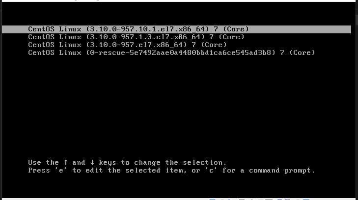
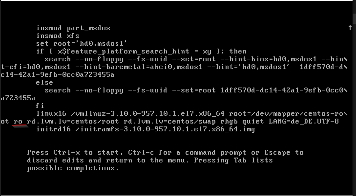
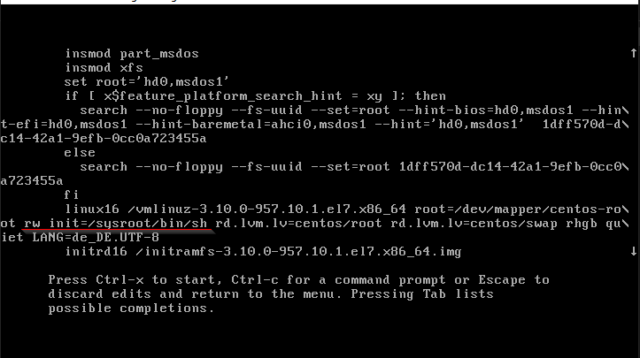

root password reseting in centos
-
In the grub menu select actual kernel and type “-e” 
-
Go to the line with “
linux 16” and changerotorw init=/sysroot/bin/sh”.
before: 
after: 
-
Press
ctrl+Xfor starting a single mode session - When single mode is started access to the system…:
chroot /sysroot - And using passwd command change the root’s password:
passwd root - Finally, it is necessary to update SELinux information by createing an empty .autorelabel in
/touch /.autorelabel -
Exit from single mode session
- Try to login using a new password